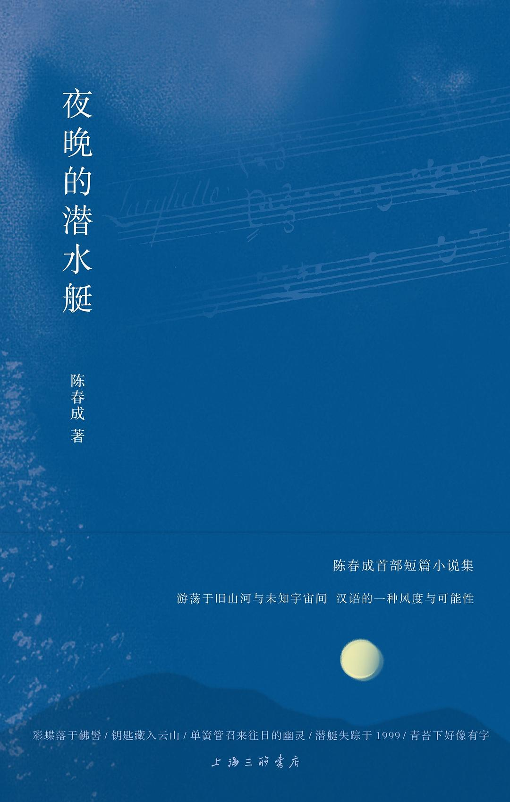
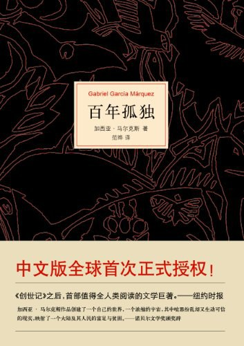
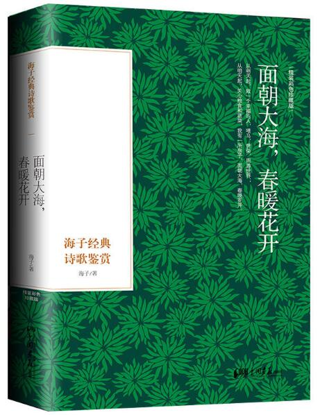
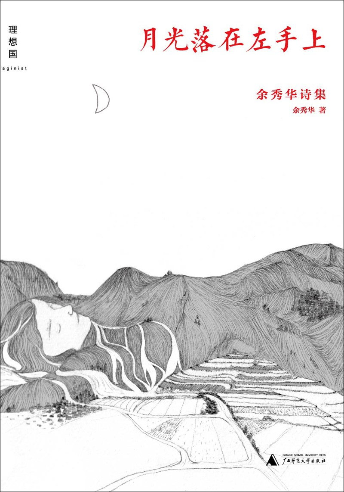
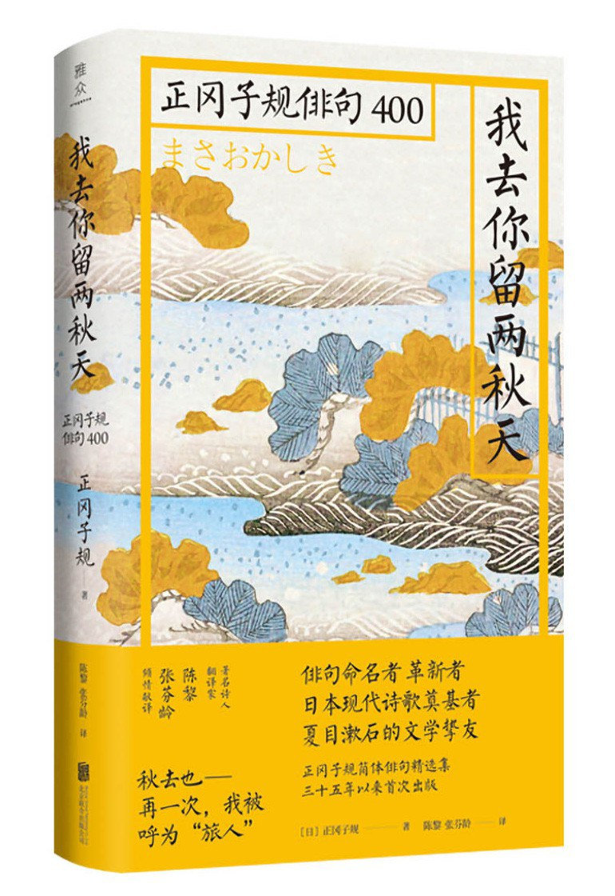
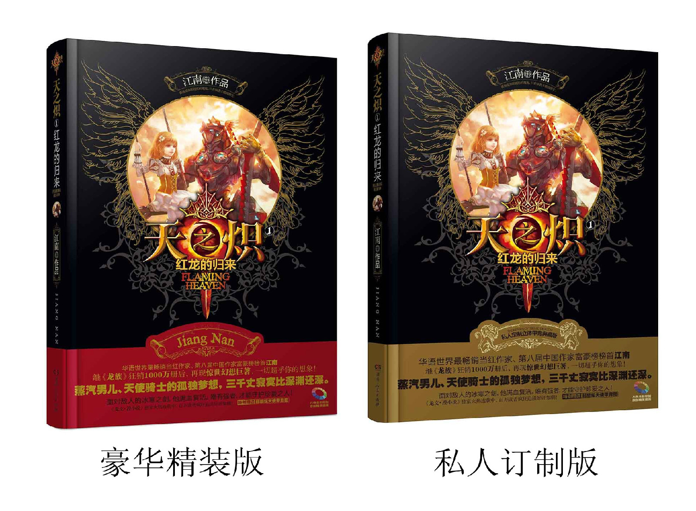

夜晚的潜水艇
夜晚的潜水艇的文笔烂漫，想象舒畅自然。 去年的生日远在南昌的友人赠送了我这样一本书，在大一的暑假将本书阅读完成。 本人最爱篇目为传彩笔，讲述了当你拥有世界上能写出最好的文字的笔，但是代价是你写的文字无法被世人以任何方式阅读的故事。 该篇目带给本人的影响是巨大的，除开文字的优美，单单写出世上最美的文字这样的幻想就足够我欢喜的了。
百年孤独
我写不出来主角的名字，太长了，不过剧情真是精彩，将这个家族的一些写下来，一看就会上瘾的书。 宿命在这本书中体现的淋漓尽致，果然关于预言还有宿命的东西最吸引我的兴趣。
海子诗集
诗的启蒙，在初中休息完的那个午后，一句“面朝大海，春暖花开”彻底击溃了我的内心。 春花秋月，历史流连。我和诗的有了一样的宿命感，要么藏在日记的角落中，要么被世人一直摘抄传唱。
月光落在左手上
读诗的第二阶段，存粹的感情的流露，余秀华是真的很会写。 时常会幻想，这诗的意境我何时会遇见。 大爱《我爱你》和《岔路镇》
我去你留两秋天
对日本haiku的探究，是对意象的解读。 也是对日本物哀的心境的探索。 这本集子是日本诗文化的新开端，也是具有一定的研究意义的。
天之炽
江南啊，别再拖了，我真的很期待天之炽还有龙族的续集啊！！！ 最喜欢的一本中二小说，本来想要放龙族的，可惜了。 天之炽第一本可以当作一本单行本来看，几乎不影响其他连载的理解。